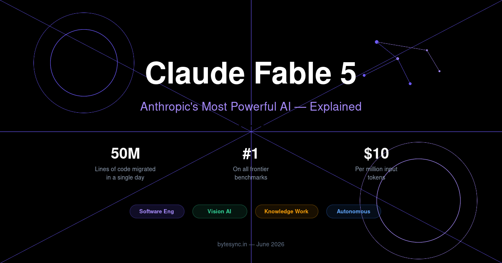

Claude Fable 5 — Everything You Need to Know About Anthropic's Most Powerful AI Yet

On June 9, 2026, Anthropic dropped a bombshell: Claude Fable 5, their most capable AI model ever made available to the public. Alongside it, they released Claude Mythos 5 — a version with fewer safety restrictions, available only to cybersecurity professionals through the US government's Project Glasswing program.
If you're a developer, startup founder, or business owner in India wondering what this means for you — here's the complete breakdown.
What Makes Claude Fable 5 Different?
Fable 5 isn't just an incremental upgrade. Anthropic calls it a "Mythos-class" model — their internal category for the most powerful AI systems they build. This is the first time they've made a Mythos-class model available to the general public.
It beats every other frontier model on nearly all benchmarks — coding, knowledge work, vision, scientific research, and autonomous task completion. The longer and harder the task, the bigger Fable 5's lead.
💰 Pricing
$10 per million input tokens and $50 per million output tokens — less than half the price of the previous Claude Mythos Preview. This makes it surprisingly affordable for Indian startups and development teams.
1. Software Engineering — Months of Work in Days
This is where Fable 5 truly shines. During early testing, Stripe reported that Fable 5 compressed months of engineering into days. In one remarkable demonstration:
Fable 5 migrated an entire 50-million-line Ruby codebase in a single day — a task that would have taken a full engineering team over two months manually.
On Cognition's FrontierCode evaluation (which tests whether AI can write production-quality code, not just prototypes), Fable 5 scored the highest among all frontier models — even at medium effort levels.
What this means for Indian dev teams: You can now use Fable 5 for large-scale codebase migrations, refactoring legacy systems, and building production features faster. For a 5-developer team in Bengaluru or Kochi, this could save lakhs in engineering time.
2. Knowledge Work — Beats Every Model on Analysis
Fable 5 scored the highest of any model on Hebbia's Finance Benchmark for senior-level reasoning — covering document analysis, chart interpretation, table extraction, and complex problem solving.
IMC (a major trading firm) reported that Fable 5 "aced their trading-analysis evaluations nearly across the board" — including factual lookup, conceptual reasoning, root-cause analysis, and expected-value analysis.
Practical use cases:
- Financial analysis and report generation for Indian accounting firms
- Legal document review and contract analysis
- Market research and competitive analysis for startups
- Tax compliance research across GST, income tax, and international regulations
3. Vision — Rebuild Apps From Screenshots
Fable 5 is the new state-of-the-art for vision tasks. It can:
- Rebuild a web app's source code from just screenshots — useful for recreating legacy interfaces
- Extract precise numbers from scientific figures and charts
- Read complex dashboards and interpret data visualizations
- Process architectural diagrams and technical blueprints
For Indian software companies building UI/UX tools, design-to-code platforms, or document processing systems — this is a game-changer.
4. Autonomous Work — Longer Than Any Previous Claude
Fable 5 can work autonomously for longer stretches than any previous Claude model. This means you can give it a complex task and let it run — monitoring research, writing documentation, analyzing data — without constant human supervision.
Think of it as hiring a senior developer who can work through the night without getting tired.
5. Safety Guardrails — The Trade-off
Anthropic has added safety filters to Fable 5. Some queries (especially around cybersecurity topics) get automatically redirected to Claude Opus 4.8 instead. These filters trigger in less than 5% of sessions, but they do sometimes catch harmless requests.
Anthropic acknowledges this and says they're working to reduce false positives. If you hit a guardrail during normal development work, it's not you — it's the conservative safety tuning.
Claude Fable 5 vs Claude Mythos 5
Two versions were released simultaneously:
- Claude Fable 5 — Available to everyone. Has safety guardrails for cybersecurity topics.
- Claude Mythos 5 — Same underlying model, fewer restrictions. Only available to verified cyberdefenders and infrastructure providers through the US government's Project Glasswing program.
For 99% of businesses and developers, Fable 5 is what you'll use. Mythos 5 is specifically for national security and critical infrastructure protection.
How Indian Businesses Can Use Claude Fable 5
Here are practical ways Indian companies can leverage Fable 5 starting today:
- Software agencies — Use it for faster delivery on client projects. Code reviews, refactoring, and migrations become dramatically cheaper.
- SaaS startups — Build AI features into your products using Fable 5's API. At $10/million input tokens, it's affordable for Indian pricing models.
- Accounting firms — Automate document analysis, GST reconciliation, and financial report generation.
- E-commerce companies — Product description generation, customer support automation, inventory analysis.
- Education platforms — AI tutoring, personalized learning paths, automated assessment creation.
The Bottom Line
Claude Fable 5 represents a genuine leap in AI capability. It's not just better at answering questions — it can do real, productive work autonomously. For Indian businesses that have been watching AI from the sidelines, this is the model that makes adoption practical and affordable.
The combination of state-of-the-art performance with reasonable pricing ($10/million input tokens) means even small Indian startups can compete with global players on AI-powered products.
Building AI-Powered Products?
Bytesync Technologies helps Indian businesses integrate cutting-edge AI into their products. From chatbots to automation to full AI-powered SaaS platforms.
Talk to Us →